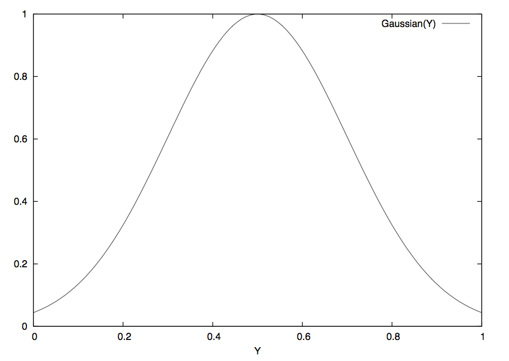
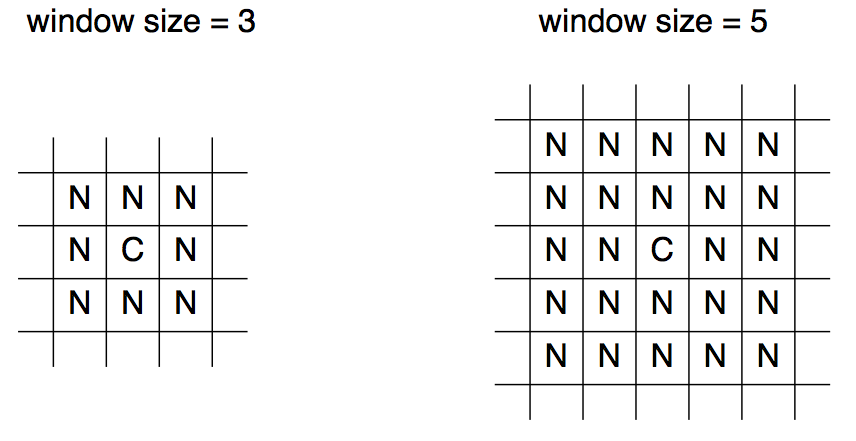

Enfuse reference manual
Enfuse
1. Overview
Enfuse merges overlapping images using the Mertens-Kautz-Van Reeth exposure fusion algorithm.(1) This is a quick way for example to blend differently exposed images into a nice output image, without producing intermediate high-dynamic range (HDR) images that are then tonemapped to a viewable image. This simplified process often works much better than tonemapping algorithms.
Enfuse can also be used to build extended depth-of-field (DOF) images by blending a focus stack.
The idea is that pixels in the input images are weighted according to qualities such as, for example, proper exposure, good contrast, or high saturation. These weights determine how much a given pixel will contribute to the final image.
A Burt-Adelson multiresolution spline blender(2) is used to combine the images according to the weights. The multiresolution blending ensures that transitions between regions where different images contribute are difficult to spot.
Enfuse uses up to four criteria to judge the quality of a pixel, which tab:weighting-criteria briefly describes.
- Exposure
- The exposure criteria favors pixels with luminance close to the middle of the range. These pixels are considered better exposed as those with high or low luminance levels.
- Saturation
- The saturation criteria favors highly-saturated pixels. (Note that saturation is only defined for color pixels.)
- Contrast
- The contrast criteria favors pixels inside a high-contrast neighborhood. Enfuse can use standard deviation or Laplacian magnitude or a blend of both as local contrast measure.
- Entropy
- The entropy criteria prefers pixels inside a high-entropy neighborhood. In addition, Enfuse allows the user to mitigate the problem of noisy images when using entropy weighting by setting a black threshold.
Table 1.1: Enfuse's four weighting criteria.
For the concept of pixel weighting and details on the different weighting functions see Weighting Functions.
Adjust how much importance is given to each criterion by setting the weight parameters on the command line. For example, if you set '--wExposure=1.0' and '--wSaturation=0.5', Enfuse will favor well-exposed pixels over highly-saturated pixels when blending the source images. The effect of these parameters on the final result will not always be clear in advance. The quality of the result is subject to your artistic interpretation. Playing with the weights may or may not give a more pleasing result. The authors encourage you to experiment, perhaps using down-sized(3) or cropped images for speed.
Enfuse expects but does not require each input image to have an alpha channel. By setting the alpha values of pixels to zero, users can manually remove those pixels from consideration when blending. If an input image lacks an alpha channel, Enfuse will issue a warning and continue assuming all pixels should contribute to the final output. Any alpha value other than zero is interpreted as 'this pixel should contribute to the final image'.
Find out more about Enfuse on its webpage.
2. Invocation
enfuse [OPTIONS] -o OUTPUT-FILE INPUT-FILES....
Fuse the sequence of images INPUT-FILES' into OUTPUT-FILE.
| General options | ||
| Memory control and others | ||
| Image fusion control | ||
| Contrast and entropy selection configuration | ||
| How to separate options' arguments |
2.1 Common Options
Common options control some overall features of Enfuse.
-
--compression=COMPRESSION - Write a compressed output file.
Depending on the output file format Enfuse accepts different values for COMPRESSION.
- JPEG
- COMPRESSION is a JPEG quality level ranging from 0'100.
- TIFF
- COMPRESSION is one of the keywords:
- 'NONE'
- Do not compress. This is the default.
- 'DEFLATE'
- Use the Deflate compression scheme also called ZIP-in-TIFF. Deflate is a lossless data compression algorithm that uses a combination of the LZ77 algorithm and Huffman coding.
- 'LZW'
- Use Lempel-Ziv-Welch (LZW) adaptive compression scheme. LZW compression is lossless.
- 'PACKBITS'
- Use PackBits compression scheme. PackBits is a particular variant of run-length compression; it is lossless.
- Any other format
- Other formats like the PNG do not accept a COMPRESSION setting.
-
-h -
--help - Print information on the available options then exit.
-
-l LEVELS - Use exactly this many LEVELS for pyramid blending.
This option allows to trades off quality of results for slightly shorter execution time and lower memory usage. The default is to use as many levels as possible given the size of the overlap region. Enfuse may still use a smaller number of levels if the geometry of the images demands it.
-
-o OUTPUT-FILE - Required option that specifies the name of the OUTPUT-FILE.
-
-v -
--verbose - Increase the verbosity of progress reporting. Giving one or more '-v' options will make Enfuse more verbose.
-
-V -
--version - Output information on the Enblend version and some configuration details like extra features that have been compiled in.
-
-w - Blend around the ± 180° boundary. This is useful for full 360° panoramas.
Version 3.2-cvs of Enfuse, the one described here, does not blend neither zenith nor or nadir, so you may still see some seams in these areas.
2.2 Extended Options
Extended options control the image cache, the color model, and the cropping of the output image.
-
-b BLOCKSIZE - Set the BLOCKSIZE in kilobytes (KB) of Enfuse's image cache.
This is the amount of data that Enfuse will move to and from the disk in one go. The default is 2048KB, which should be ok for most systems. See Tuning Memory Usage for details.
-
-c - Use the CIECAM02 color appearance model for blending colors.
The input files should have embedded ICC profiles when this option is specified. If no ICC profile is present, Enfuse will assume that the image uses the sRGB color space. The difference between this option and Enfuse's default color blending algorithm is slight, and will be only noticeable when areas of different primary colors are blended together.
-
-d -
--depth=DEPTH - Force the number of bits per channel and the numeric format of the output image.
All DEPTH specifications are valid in lowercase as well as uppercase letters. For integer format use
-
8,uint8 - Unsigned 8 bit; range: 0..255
-
int16 - Signed 16 bit; range: -32768..32767
-
16,uint16 - Unsigned 16 bit; range: 0..65536
-
int32 - Signed 32 bit; range: -2147483648..2147483647
-
32,uint32 - Unsigned 32 bit; range: 0..4294967295
For floating-point format use
-
r32,real32,float - IEEE754 single precision floating-point, 32 bits wide, 24 bit significant
- - Minimal normalized value: 1.2 × 10 -38
- - Epsilon: 1.2 × 10 -7
- - Maximal finite value: 3.4 × 10 38
-
r64,real64,double - IEEE754 double precision floating-point, 64 bits wide, 53 bit significant
- - Minimal normalized value: 2.2 × 10 -308
- - Epsilon: 2.2 × 10 -16
- - Maximal finite value: 1.8 × 10 308
If the requested DEPTH is not supported by the output file format, Enblend warns and chooses the DEPTH that matches best.
-
-g - Save alpha channel as 'associated'.
Gimp (before version 2.0) and CinePaint (see section Helpful Additional Programs) exhibit unusual behavior when loading images with unassociated alpha channels. Use option '-g' to work around this problem. With this flag Enfuse will create the output image with the associated alpha tag set, even though the image is really unassociated alpha.
-
-f WIDTHxHEIGHT -
-f WIDTHxHEIGHT+xX-OFFSET+yY- OFFSET - Set the size of the output image manually to WIDTH× HEIGHT. Optionally specify the X-OFFSET and Y-OFFSET, too.
This option is useful when the input images are cropped TIFF files, such as those produced by nona. The stitcher nona is part of Hugin. See section Helpful Additional Programs.
-
-m CACHESIZE - Set the CACHESIZE in megabytes (MB) of Enfuse's image cache.
This is the amount of memory Enfuse will use for storing image data before swapping to disk. The default is 1024MB, which is good for systems with 3'4gigabytes (GB) of RAM. See Tuning Memory Usage for details.
2.3 Fusion Options
Fusion options define the proportion to which each input image's pixel contributes to the output image.
-
--wContrast=WEIGHT - Sets the relative WEIGHT of high-contrast pixels. Default: 0.0. Valid range: 0 ' WEIGHT ' 1 . See Contrast Weighting and Option ContrastWindowSize.
-
--wEntropy=WEIGHT - Sets the relative WEIGHT of high entropy pixels. Default: 0.0. Valid range: 0 ' WEIGHT ' 1 . See Entropy Weighting and Options EntropyWindowSize and EntropyCutoff.
-
--wExposure=WEIGHT - Sets the relative WEIGHT of the well-exposedness criterion. Increasing this weight relative to the others will make well exposed pixels contribute more to the final output. Default: 1.0. Valid range: 0 ' WEIGHT ' 1 . See section Exposure Weighting.
-
--wMu=MEAN - Set the MEAN (this is, the center) of the Gaussian exposure weight curve. Default: 0.5. Valid range: 0 ' MEAN ' 1 .
Use this option to fine-tune exposure weighting (see section Exposure Weighting).
-
--wSaturation=WEIGHT - Sets the relative WEIGHT of high-saturation pixels. Increasing this weight makes pixels with high saturation contribute more to the final output. Default: 0.2. Valid range: 0 ' WEIGHT ' 1 . Saturation weighting is only defined for color images. See section Saturation Weighting.
-
--wSigma=STD-DEV - Standard deviation STD-DEV of the Gaussian exposure weight curve. Default: 0.2. Low numbers give less weight to pixels that are far from '--wMu' and vice versa. Valid range: 0 ' STD-DEV ' 1 .
Use this option to fine-tune exposure weighting (see section Exposure Weighting).
2.4 Expert Options
Expert options influence the workings of Enfuse that require the user to read the manual before applying them successfully.
-
--ContrastWindowSize=SIZE - Set the window SIZE for local contrast analysis. The window will be a square of SIZE× SIZE pixels.
For contrast analysis SIZE values larger than 5 might result in a blurry composite image. Values of 3 and 5 have given good results on focus stacks. Valid range: SIZE ' 3 . Given an even SIZE Enfuse will automatically use the next odd number. See also Option 'wContrast and '--HardMask' below.
-
--EdgeScale=EDGE-SCALE -
--EdgeScale=EDGE-SCALE:LCE-SCALE:LCE- FACTOR - A non-zero value for EDGE-SCALE switches on the Laplacian-of-Gaussian (LoG) edge detection algorithm. EDGE-SCALE is the radius of the Gaussian used in the search for edges. Default: 0 pixels.
A positive LCE-SCALE turns on local contrast enhancement (LCE) before the LoG edge detection. LCE-SCALE is the radius of the Gaussian used in the enhancement step, LCE-FACTOR is the weight factor ('strength'). enhanced = ( 1 + LCE-FACTOR ) × original - LCE-FACTOR × GaussianSmooth ⁡ original LCE-SCALE LCE-SCALE defaults to 0 pixels and LCE-FACTOR defaults to 0. Append '%' to LCE-SCALE to specify the radius as a percentage of EDGE-SCALE. Append '%' to LCE- FACTOR to specify the weight as a percentage.
-
--EntropyCutoff=LOWER-CUTOFF -
--EntropyCutoff=LOWER-CUTOFF:UPPER-CUTOFF - The first form defines the lower cutoff value below of which pixels are treated as pure black when calculating the local entropy. The second form also defines the upper cutoff value above of which pixels are treated as pure white.
For color images LOWER-CUTOFF and UPPER-CUTOFF are applied separately and independently to each channel. Defaults: 0% for LOWER-CUTOFF and 100% for UPPER-CUTOFF, this is, all pixels' values are taken into account. Append a '%' to specify the cutoff relative to maximum pixel value in the source image (for example 255 or 65535). fig:entropy-cutoff shows an example.
Figure 2.1: Linear lightness Y in comparison with an entropy-cutoff function for LOWER-CUTOFF = 5% and UPPER-CUTOFF = 90% which are rather extreme values. Note that a high LOWER-CUTOFF value lightens the resulting image, as dark (and presumably noisy) pixels are averaged with equal weights. With '--EntropyCutoff=0', the default, on the other hand, 'noise' might be interpreted as high entropy and the noisy pixels get a high weight, which in turn renders the resulting image darker. Analogously, a low UPPER-CUTOFF darkens the output image.
-
--EntropyWindowSize=SIZE - Window SIZE for local entropy analysis. The window will be a square of SIZE× SIZE pixels.
In the entropy calculation SIZE values of 3 to 7 yield an acceptable compromise of the locality of the information and the significance of the local entropy value itself. Valid range: SIZE ' 3 . Given an even SIZE Enfuse will automatically use the next odd number.
-
--GrayProjector=PROJECTOR - Use gray projector PROJECTOR for conversion of RGB images to grayscale masks: R G B → Y . In version 3.2-cvs of Enfuse, the option is effective for exposure weighting contrast weighting. Default: 'average'.
Valid values for PROJECTOR are:
-
average - Average red, green, and blue channel with equal weights. This is the default and it often is a good projector for gamma = 1 data. Y = R + G + B 3
-
l-star - Use the L-channel of the L*a*b*-conversion of the image as its grayscale representation. This is a useful projector for gamma = 1 data. It reveals minute contrast variations even in the shadows and the highlights. This projector is computationally expensive.
See Wikipedia for a detailed description of the Lab color space.
-
lightness - Compute the lightness of each RGB pixel as in an Hue-Saturation-Lightness (HSL) conversion of the image. Y = max ⁡ R G B + min ⁡ R G B 2
-
value - Take the Value-channel of the Hue-Saturation-Value (HSV) conversion of the image. Y = max ⁡ R G B
-
luminance - Use the weighted average of the RGB pixel's channels as defined by CIE ('Commission Internationale de l'Éclairage') and the JPEG standard. Y = 0.30 ⁢ R + 0.59 ⁢ G + 0.11 ⁢ B
-
channel-mixer:RED-WEIGHT:GREEN-WEIGHT:BLUE- WEIGHT - Weight the channels as given. Y = RED-WEIGHT × R + GREEN-WEIGHT × G + BLUE-WEIGHT × B
The weights are automatically normalized to one, so
--GrayProjector=channel-
mixer:0.25:0.5:0.25
--GrayProjector=channel-mixer:1:2:1
--GrayProjector=channel-mixer:25:50:25
|
all define the same mixer configuration. The three weights RED-WEIGHT, GREEN-WEIGHT, and BLUE-WEIGHT define the relative weight of the respective color channel. The sum of all weights is normalized to one.
-
--HardMask - Force hard blend masks on the finest scale. This is the opposite flag of '--SoftMask'.
This blending mode avoids averaging of fine details (only) at the expense of increasing the noise. However it considerably improvs the sharpness of focus stacks. Blending with hard masks has solely proven useful with focus stacks. See also Option 'wContrast and '--ContrastWindowSize' above.
-
--MinCurvature=CURVATURE - Define the minimum CURVATURE for the LoG edge detection. Default: 0. Append a '%' to specify the minimum curvature relative to maximum pixel value in the source image (for example 255 or 65535).
A positive value makes Enfuse use the local contrast data (controlled with '--ContrastWindowSize') for curvatures less than CURVATURE and LoG data for values above it. A negative value truncates all curvatures less than -CURVATURE to zero. Values above CURVATURE are left unchanged. This effectively suppresses weak edges.
-
--SoftMask - Consider all masks when fusing. This is the default.
2.5 Option Delimiters
Enfuse allows the arguments supplied to the program's options to be separated by different separators. The online documentation and this manual, however, exclusively uses the colon ':' in every syntax definition and in all examples. Valid delimiters are the comma ',', the semicolon ';', the colon ':', and the slash '/'. All delimiters may be mixed within any option.
Examples:
- '--EdgeScale=0.667
- 6.67:3.5'
- Separate all arguments with colons.
- '--EdgeScale=0.667,6.67,3.5'
- Use commas.
- '--EdgeScale=0.667;6.67/3.5'
- Mix semicolon and slash in weird ways.
- '--EntropyCutoff=3%/99%'
- All delimiters also work in conjuction with percentages.
- '--GrayProjector=channel-mixer
- 3/6/1'
- Separate arguments with a colon and two slashes.
- '--GrayProjector=channel-mixer/30;60,10'
- Go wild and Enfuse will understand.
3. Weighting Functions
As has been noted in the Overview (see section Overview), Enfuse supports four different types of weighting. The following subsections describe the concept of weighting and all weighting functions in detail.
| General concept of weighting pixels | ||
| Weighting by exposure | ||
| Weighting by saturation | ||
| Weighting by local contrast | ||
| Weighting by local entropy |
3.1 Weighting Pixels
Image fusion maps each pixel P(i, x, y) of every input image i to a single pixel Q(x, y) in the output image: P i x y → Q x y , where x runs from 1 to the common width of the images, y from 1 to the common height, and i from 1 to the number of input images n.
Enfuse allows for weighting the contribution of each P(i, x, y) to the final Q(x, y): w ⁡ ( P 1 x y ) × P 1 x y + ... + w ⁡ ( P n x y ) × P n x y → Q i x y , (W) where
- each w is non-negative to yield a physical intensity and
- the sum of all w is one to leave the total intensity unchanged.
The pixel weights w themselves are weighted sums with the same constraints
w ⁡ ( P ) = w exp × f exp ⁡ ( P ) + w sat × f sat ⁡ ( P ) + w cont × f cont ⁡ P r cont + w ent × f ent ⁡ P r ent
where we have abbreviated P i x y to P for simplicity. The user defines the constants w exp , w sat , w cont , and w ent with the options `--wExposure', `--wSaturation', `--wContrast', and `--wEntropy' respectively. The functions f exp , f sat , f cont , and f ent along with the window sizes r cont and r ent are explained in the next sections.
| Enfuse's default weighting algorithm | ||
| 'Super Trouper' weighting for focus stacks |
3.1.1 Weighted Average
By default, Enfuse uses a weighted average, where each pixel contributes as much as its weight demands. Of course the weights can be extreme, favouring only a few pixels or even only one pixel in the input stack. Extremes are untypical, however.
Equal weights are another extreme that turns (W) into an arithmetic average. this is why we sometimes speak of the 'averaging property' of this weighting algorithm, like smoothing out noise.
3.1.2 Disabling Averaging: Option '-- HardMask'
The weighted average computation as described above has proven to be widely successful with the exception of one special case: focus stacking (see section Focus Stacks ' Depth-of-Field Increase), where the averaging noticeably softens the final image.
Use '--HardMask' to switch Enfuse into a different ('Super Trouper') weighting mode, where the pixel with the highest weight wins, this is, gets weight one, and all other pixels get the weight of zero ('The Winner Takes It All.'). With '--HardMask' Equation (W) becomes P i x y → Q x y ,   where   w ⁡ ( P i x y ) ' w ⁡ ( P j x y )   for all   1 ' j ' n .
Note that this 'averaging' scheme lacks the nice noise-reduction property of the weighted average (W), because only a single input pixel contributes to the output.
3.2 Exposure Weighting
Exposure weighting prefers pixels with a luminance Y close to the center of the normalized, real-valued luminance interval [0, 1].
RGB-pixels get converted to luminance using the grayscale projector given by '--GrayProjector', which defaults to average. Grayscale pixels are identified with luminance.
In the normalized luminance interval 0.0 represents pure black and 1.0 represents pure white independently of the data type of the input image. This is, for a JPEG image the luminance 255 maps to 1.0 in the normalized interval and for a 32bit TIFF picture the highest luminance value 4294967295 also maps to 1.0. The middle if the luminance interval, 0.5, is where a neutral gray tone ends up with every camera that had no exposure correction dialed in, for example the image of a gray- or white-card.
The exposure weighting algorithm only looks at a single pixel at a time; the pixel's neighborhood is not taken into account.
The weighting function is the Gaussian w exp ⁡ ( Y ) = exp ⁡ ( - 1 2 ⁢ ( Y - Mu Sigma ) 2 ) whose center Mu and width Sigma are controlled by the command line options '--wMu' and '-- wSigma' respectively. Mu defaults to 0.5, the middle of the luminance interval. Sigma defaults to 0.2. fig:gaussian shows a Gaussian with these parameters.

Figure 3.1: Gaussian function with Enfuse's default parameters Mu = 0.5 and Sigma = 0.2.
The options '--wMu' and '--wSigma' are for fine-tuning the final result without changing the set of input images. Option '--wMu' sets the point Mu of optimum exposure. The default is Mu = 0.5, exactly the middle between pure black (0.0) and pure white (1.0). Increasing Mu makes Enfuse prefer lighter pixels, rendering the final image lighter and vice versa. Option '--wSigma' defines the range Sigma of acceptable exposures. The default is Sigma = 0.2, which means at Mu ± 0.2 the weight will be approximately 0.88. Small values of Sigma penalize exposures deviant from Mu more and vice versa.
Summary of influential options
- '--wExposure'
- Fusion Options
- '--wMu'
- Fusion Options
- '--wSigma'
- Fusion Options
- '--GrayProjector'
- Expert Options
3.3 Saturation Weighting
Saturation weighting prefers pixels with a high saturation.
Enfuse computes the saturation of a pixel according to the following algorithm.
max := maximum(R,
G, B)
min := minimum(R, G, B)
if max = min then
saturation := 0
else
sum := max + min
difference := max - min
if sum <= 1 then
saturation := difference / sum
else
saturation := difference / (2 - sum)
end if
end if
|
Obviously, saturation weighting can only be defined for RGB images, not for grayscale ones! If you need something similar check out Entropy Weighting; entropy weighting works for both RGB and grayscale pictures.
The saturation weighting algorithm only looks at a single pixel at a time; the pixel's neighborhood is not taken into account.
Summary of influential options
- '--wSaturation'
- Fusion Options
3.4 Contrast Weighting
Contrast weighting favors pixels inside a high contrast neighborhood. The notion of 'high contrast' is defined either by two different criteria or by a blend of both:
- The standard deviation (SDev) of all the pixels in the local analysis window is large. See section Standard Deviation.
- The Laplacian-of-Gaussian (LoG) has a large magnitude. See section Laplacian of Gaussian.
- If the LoG magnitude is below a given threshold, use SDev data, otherwise stick with LoG. See section Blend Standard Deviation and Laplacian of Gaussian.
Enfuse converts every RGB image to grayscale before it determines its contrast. Option '--GrayProjector' (see section Expert Options) controls the projector function. Depending on the subject one of several grayscale projectors may yield the best black-and-white contrast for image fusion.
In the following sections we describe each algorithm in detail.
|
Standard deviation (SDev) | ||
|
LoG, a second derivative method | ||
|
Mix and match SDev and LoG | ||
| How parameters do not scale; neither does mode |
3.4.1 Standard Deviation
The pixel under consideration C sits exactly in the center of a square, the so-called local analysis window. It always has an uneven edge length. The user sets the size with option '--ContrastWindowSize'. fig:local-analysis-window shows two windows with different sizes.

Figure 3.2: Examples of local analysis windows for the sizes 3 and 5. 'C' marks the center where the pixel gets the weight. 'N' are neighboring pixels, which all contribute equally to the weight.
During the analysis Enfuse scans the local analysis window across all rows and all columns(4) of each of the input images to compute the contrast weight of every pixel.
Summary of influential options
- '--wContrast'
- Fusion Options
- '--HardMask'
- Fusion Options
- '--ContrastWindowSize'
- Expert Options
- '--GrayProjector'
- Expert Options
3.4.1.1 Statistical Moments
We start with the probability function w of the random variable X: w : x → p ⁡ ( { ' : X ⁡ ( ' ) = x } ) . It associates a probability p with each of the n different possible outcomes ' of the random variable X. Based on w, we define the expectation value or 'First Moment' of the random variable X: Ex ⁡ X := ' i = 1 n x i × w ⁡ ( x i ) . Using the definition of the expectation value, we define the variance, or 'Second Moment' as Var ⁡ X := Ex ⁡ ( ( X - Ex ⁡ X ) 2 ) and the standard deviation as ' ⁡ X := Var ⁡ X . Obviously, the variance of X is the expectation value of the squared deviation from the expectation value of X itself. Note that the variance's dimension is X's dimension squared; the standard deviation rectifies the dimension to make it comparable with X itself again.
3.4.1.2 Estimators
In Enfuse, we assume that X follows a uniform probability function w(x) = const. This is, all pixel values in the local analysis window are considered to be equally probable. Thus, the expectation value and the variance can be estimated from the pixel values like this Ex ⁡ X := 1 n ⁢ ' i = 1 n x i . In other words: the expectation value is the arithmetic mean of the lightness of all pixels in the local analysis window. Analogously, the variance becomes Var ⁡ X := 1 n - 1 ⁢ Ex ⁡ ( ( X - Ex ⁡ X ) 2 ) .
3.4.2 Laplacian of Gaussian
The Laplacian of Gaussian (LoG) is an operator to detect edges in an image. Sometimes the LoG-operator is also called Marr-Hildreth operator. A Laplacian-of-Gaussian operator, hamburg.de/~koethe/vigra/doc/vigra/group__CommonConvolutionFilters.html vigra::laplacianOf Gaussian is part of the package Vigra that Enfuse is built upon and is used for edge detection if option '--EdgeScale' is non-zero and '--MinCurvature' equal to or less than zero.
Let the Gaussian function be g x y = 1 2 ⁢ ' ⁢ ' 2 ⁢ exp ⁡ ( - x 2 + y 2 2 ⁢ ' 2 ) The parameter ' , the argument of option '--EdgeScale', is the length scale on which edges are detected by g(x, y). We apply the Laplacian operator in Cartesian coordinates ' ' ' · ' = ∂ 2 ∂ x 2 + ∂ 2 ∂ y 2 to g(x, y), to arrive at a continous representation of the two-dimensional filter kernel k x y = ' 2 - 1 ' ⁢ ' 4 ⁢ exp ⁡ ( - ' 2 ) , where we have used the dimensionless distance ' from the origin ' 2 = x 2 + y 2 2 ⁢ ' 2 . Enfuse uses a discrete approximation of k in the convolution with the image. The operator is radially symmetric with respect to the origin, which is why we can easily plot it in fig:laplacian-of-gaussian, setting R = x 2 + y 2 .
Figure 3.3: Laplacian-of-Gaussian function for ' = 0.5.
See also HIPR2: Laplacian of Gaussian.
Sometimes the LoG is plagued by noise in the input images. After all it is a numerical approximation of the second derivative and deriving always 'roughens' a function. The (normalized) mask files relentlessly disclose such problems. Use option '--MinCurvature' with a negative argument CURVATURE to suppress all edges with a curvature below -CURVATURE (which is a positive value). Check the effects with the mask files and particularly the 'mask####_wta.tif' files if using option '--HardMask'.
To indicate the CURVATURE in relative terms, which is particularly comprehensible for humans, append a percent sign ('%'). Try minimum curvatures starting from -0.5% to -3%.
Summary of influential options
- '--wContrast'
- Fusion Options
- '--HardMask'
- Fusion Options
- '--EdgeScale'
- Expert Options
- '--MinCurvature'
- Expert Options
3.4.3 Blend Standard Deviation and Laplacian of Gaussian
Enfuse can team the standard deviation computation and Laplacian of Gaussian to deliver the best of both methods. Use a positive argument CURVATURE with option '--MinCurvature' to combine both algorithms. In this mode of operation Enfuse computes the SDev-weight and the LoG-weight, then uses the LoG to decide whether to go with that value or prefer the SDev data. If the LoG is greater than CURVATURE Enfuse uses the weight delivered by the LoG, otherwise the SDev-weight is rescaled such that its maximum is equal to CURVATURE and the scaled SDev is used as weight.
This technique merges the two edge detection methods where the are best. The LoG excels with clear edges and cannot be fooled by strong but smooth gradients. However, it is bad at detecting faint edges and it is susceptible to noise. The SDev on the othe hand shines with even the most marginal edges and resists noise quite well. Its weakness is that is is easily deceived by strong and smooth gradients. Tuning CURVATURE the user can pick the best threshold for a given set of images.
Summary of influential options
- '--wContrast'
- Fusion Options
- '--HardMask'
- Fusion Options
- '--ContrastWindowSize'
- Expert Options
- '--GrayProjector'
- Expert Options
- '--EdgeScale'
- Expert Options
- '--MinCurvature'
- Expert Options
3.4.4 Scaling and Choice of Mode
Experience has shown that neither the parameters EDGESCALE and CURVATURE nor the mode of operation (SDev-only, LoG-only, or a blend of both) scales to different image sizes. In practice this means that if you start with a set of reduced size images, say 2808× 1872 pixels, carefully optimize EDGESCALE, CURVATURE and so on, moreover find LoG-only the best mode and then switch to the original resolution of 5616× 3744 pixels, multiplying (or dividing) the parameters by four and sticking to LoG-only might not result in the best fused image. For best quality perform the parameter optimization and the search for the most appropriate mode at the final resolution.
3.5 Entropy Weighting
Entropy weighting prefers pixels inside a high entropy neighborhood.
Let S be an n-ary source. Watching the output of S an observer on average gains the information H a ⁡ ( n ) := ∑ x ∈ S p ⁡ ( x ) × log a ⁡ ( 1 / p ⁡ ( x ) ) per emitted message, where we assume the knowledge of the probability function p(S). The expectation value H_a(n) is called entropy of the source S. Entropy measures our uncertainty if we are to guess which message gets chosen by the source in the future. The unit of the entropy depends on the choice of the constant a > 1. Obviously H b ⁡ ( n ) = H a ⁡ ( n ) / log a ⁡ ( b ) holds for all b > 1. We use a = 2 for entropy weighting and set the entropy of the 'impossible message' to zero according to lim p → 0 p × log a ⁡ ( 1 / p ) = 0 . fig:entropy shows an entropy function.
Figure 3.4: Entropy function H for an experiment with exactly two outcomes.
For more on (information) entropy visit Wikipedia.
Enfuse computes a pixel's entropy by considering the pixel itself and its surrounding pixels quite similar to Contrast Weighting. The size of the window is set by '--EntropyWindowSize'. Choosing the right size is difficult, because there is a serious tradeoff between the locality of the data and the size of the sample used to compute H. A large window results in a large sample size and therefore in a reliable entropy, but considering pixels far away from the center degrades H into a non-local measure. For small windows the opposite holds true.
Another difficulty arises from the use of entropy as a weighting function in dark parts of an image, this is, in areas where the signal-to-noise ratio is low. Without any precautions high noise is taken to be high entropy, which might not be desired. Use option '--EntropyCutoff' to control the black level when computing the entropy.
On the other extreme side of lightness, very light parts of an image, the sensor might already have overflown without the signal reaching 1.0 in the normalized luminance interval. For these pixels the entropy is zero and Enfuse can be told of the threshold by properly setting the second argument of '--EntropyCutoff'.
Summary of influential options
- '--wEntropy'
- Fusion Options
- '--EntropyWindowSize'
- Expert Options
- '--EntropyCutoff'
- Expert Options
4. Understanding Masks
A binary mask indicates for every pixel of an image if this pixel must be considered in further processing or ignored. For a weight mask, the value of the mask determines how much the pixel contributes, zero again meaning 'no contribution'.
Masks arise in two places: as part of the input files and as separate files, showing the actual pixel weights prior to image blendung or fusion. We shall explore both occurrences in the next sections.
4.1 Masks in Input Files
Each of the input files for Enfuse and Enblend can contain its own mask. Both applications interpret them as binary masks no matter how many bits per image pixel they contain.
Use ImageMagick's identify or, for TIFF files, tiffinfo to inquire quickly whether a file contains a mask. Helpful Additional Programs shows where to find these programs on the web.
$ identify -format "%f %m %wx%h %r %q-
bit" remapped-0000.tif
remapped-0000.tif TIFF 800x533 DirectClassRGBMatte 8-bit
^^^^^ mask
|
$ tiffinfo remapped-0000.tif TIFF Directory at offset 0x1a398a (1718666) Subfile Type: (0 = 0x0) Image Width: 800 Image Length: 533 Resolution: 150, 150 pixels/inch Position: 0, 0 Bits/Sample: 8 Sample Format: unsigned integer Compression Scheme: PackBits Photometric Interpretation: RGB color Extra Samples: 1<unassoc-alpha> <<<<< mask Orientation: row 0 top, col 0 lhs Samples/Pixel: 4 <<<<< R, G, B, and mask Rows/Strip: 327 Planar Configuration: single image plane |
The 'Matte' part of the image class and the 'Extra Samples' line tell us that the file features a mask. Also, many interactive image manipulation programs show the mask as a separate channel, sometimes called 'Alpha'. There, the white (high mask value) parts of the mask enable pixels and black (low mask value) parts suppress them.
The multitude of terms all describing the concept of a mask is confusing.
- Mask
- A mask defines a selection of pixels. A value of zero represents an unselected pixel. The maximum value ('white') represents a selected pixel and the values between zero and the maximum are partially selected pixels. See Gimp-Savy.
- Alpha Channel
- The alpha channel stores the transpacency value for each pixel, typically in the range from zero to one. A value of zero means the pixel is completely transparent, thus does not contribute to the image. A value of one on the other hand means the pixel is completely opaque.
- Matte
- The notion 'matte' as used by ImageMagick refers to an inverted alpha channel, more precisely: 1 - alpha. See ImageMagick for further explanations.
Enblend and Enfuse only consider pixels that have an associated mask value different from zero. If an input image does not have an alpha channel, Enblend warns and assumes a mask of all non-zero values, this is, it will use every pixel of the input image for fusion.
Stitchers like nona add a mask to their output images.
Sometimes it is helpful to manually modify a mask before fusion. For example to suppress unwanted objects (insects and cars come into mind) that moved across the scene during the exposures. If the masks of all input images are black at a certain position, the output image will have a hole there.
4.2 Weight Mask Files
...
5. Tuning Memory Usage
The default configuration of Enfuse assumes a system with 3'4GB of RAM.
If Enfuse has been compiled with the C++-preprocessor symbol ENBLEND_CACHE_IMAGES it uses its own image cache, whose size is user configurable with the option '-m CACHE-SIZE' (see section Extended Options). Furthermore, option '-b BUFFER-SIZE' (see section Extended Options) allows for fine-tuning the size of a single buffer inside the image cache. Note that CACHE-SIZE is given in megabytes, whereas BUFFER-SIZE is given in kilobytes.
Usually the user lets the operating system take care of the memory management of all processes. However, a user of Enfuse might want to control the balance between the operating systems' Virtual Memory System and Enfuse's image cache for several reasons.
- Paging in or out parts of a process' image runs at kernel level and thus can make user processes appear unresponsive or 'jumpy'. The caching mechanism of Enfuse of course runs as a user process, which is why it has less detrimental effects on the system's overall responsiveness.
- Enfuse's image cache has been optimized for accesses to image data. And all algorithms in Enfuse have been carefully arranged to play nice with the image cache. An operating system's cache has no knowledge of these particular memory access patterns.
- The disk access of the operating system to the swap device has been highly optimized. Enfuse on the other hand uses the standard IO-layer which is a slower interface.
- Limiting the amount of image cache prevents Enfuse from eating up most or all RAM, thereby forcing all user applications into the swap device.
The CACHE-SIZE should be set in a way as to reconcile all of the above aspects even for the biggest data sets (this is many images and large images).
Suggested cache- and buffer-sizes for different amounts of available RAM.
| RAM | CACHE-SIZE | BUFFER-SIZE | Comment |
|---|---|---|---|
| MB | MB | KB | |
| 4096 | 1024 | 2048 | default |
| 2048 | 512'1024 | 1024 | |
| 1024 | 256'512 | 256'512 |
Table 5.1: Suggested cache-size settings
6. Applications of Enfuse
The section describes some of the novel possibilities that Enfuse offers the photographer. In contrast to the previous chapters it centers around the image effects.
| What makes images fusable? | ||
| Just taking the same shot multiple times | ||
| Varying the exposure time | ||
| Varying the flash output | ||
| Changing the polarizer angle | ||
| Stacking images with different in-focus distance |
6.1 What Makes Images Fusable?
Images should align well to be suitable for fusion. However, there is no hard mathematical rule what 'well' means. The alignment requirements for 16MPixel images to yield a sharp 4"× 6" print at 300dpi ('dpi' means dots per inch) or even for web presentation are relatively low, whereas the alignment of 8MPixel images for a 12"× 18" print ought to be tight.
If the input images need to be aligned, Hugin (see section Helpful Additional Programs) is the tool of choice. It produces images exactly in the format that Enfuse expects.
Sometimes images naturally align extremely well so that no re-alignment is required. An image series with preprogrammed exposure steps taken in rapid succession where the camera is mounted on a heavy tripod and a humongous ball head, mirror lockup and a cable release are used comes into mind.
When in doubt what will work, try it, and judge for yourself.
Useful ideas for a good alignment:
- Fix all camera parameters that are not explicitely varied.
- Aperture
- Engage full manual (<M>) or aperture-priority (<A>) mode.
- Auto-focus
- Disable 'Auto Focus'. Be aware that the auto-focus function could be linked to shutter-release button position 'half pressed' or to the shutter release in insidious ways.
- Closed eyepiece
- (This applies only to single lens reflex cameras.) Close the eyepiece when using a cable release to suppress variations in stray light.
- Exposure time/Shutter speed
- Use the shortest possible exposure time or, in other words, use the fastest shutter speed to avoid blur caused by camera shake or motion blur.
- Flash power
- Explicitely control the flash power of all flashes. This is sometimes called 'flash exposure lock'.
- Sensitivity
- Disable 'Auto ISO'.
- White balance
- Disable 'Auto White Balance'. Instead use the most suitable fixed white balance or take the white balance off a white card. When in doubt use the setting 'Daylight' or equivalent.
- Steady the camera by any means.
- Apply your best camera bracing technique combined with controlled breathing.
- Prefer a monopod or better rigid tripod with a heavy head.
- (This applies to cameras with a moving mirror only.) Engage 'mirror lockup'.
- Consider automatic bracketing when applicable.
- Activate camera- or lens-based image stabilization if you are sure that it improves the image quality in your particular case, otherwise disengage the feature.
For some lens-based image stabilization systems it is known that they 'lock' into different positions every time they are activated. Moreover, some stabilization systems decrease the image quality when the lens is mounted on a tripod.
- Fire in rapid succession.
6.2 Repetition ' Noise Reduction
Main Purpose: Reduce noise
With the default settings Enfuse computes a weighted average of the input pixels. For a series of images, repeated with identical settings this results in a reduction of (photon shot) noise. In other words, the dynamic range increases slightly, because the higher signal-to-noise ratio makes darker shades usable. Furthermore, smooth or glossy surfaces get a 'cleaner' look and edges become visually sharper. The nitty-gritty reportage look that sometimes stems from a high sensitivity setting disappears.
Averaged images and therefore low-noise images are the base for a multitude of techniques like for example differences. The most prominent method in this class is dark-frame subtraction.
The defaults set '--wExposure=1.0' and '-- wSaturation=0.2'. Eliminating the saturation component with '--wSaturation=0.0' can be worth an extra run.
6.3 Exposure Series ' Dynamic Range Increase
Main Purpose: Increase manageable dynamic range
An exposure series is a set of images taken with identical parameters except for the exposure time. Some cameras even provide special functions to automate recording exposure series. See the instruction manual of your model for details.
Enfuse's defaults, '--wExposure=1.0' and '-- wSaturation=0.2' are well suited for fusion of color images. Remember that saturation weighting only works for RGB data. Option '--wSaturation' helps controlling burnt-out highlights as these are heavily desaturated. If no image suffers from troublesome highlights, the relative saturation weight can be reduced and even be set to zero. For black and white images '--wEntropy' can be an alternative to '-- wSaturation' because it suppresses overexposed pixels as these contain little information. However, saturation weighting is not limited to grayscale data. It has been successfully applied to RGB images, too. Note that saturation weighting considers each color channel of an RGB image separately and chooses the channel with the minimum entropy as representative for the whole pixel.
Enfuse offers the photographer tremendous flexibility on fusing differenly exposed images. Whether you combine only two pictures or a series of 21, Enfuse imposes no limits on you. Accordingly, the photographic effects achieved range from subtle to surreal like the late 1980s 'Max Headroom' TV-Series to really unreal. Like some time ago in the chemical days of photography a new developer opened unseen possibilities for artists, exposure fusion extends a photographer's expressive space in the digital age. Whether the results look good or bad, whether the images are dull or exciting is entirely up the artist.
In the next sections we give assistance to starters and rectify several misconceptions about Enfuse.
| Some hints for beginners | ||
| What works despite the hype |
6.3.1 Tips For Beginners
Here are some tips to get you in business quickly.
- Include the best single exposure.
- Include the exposure you would have taken if you did not use Enfuse in your series. It gives you a solid starting point. Think of the other images as augmenting this best single exposure to bring out the light and dark features you would like to see.
- Begin with as little images as possible.
- Pre-visualizing the results of Enfuse is difficult. The more images enter the fusion process and the wider their EV-spacing is, the more challenging thinking of the output image becomes. Therefore, start off with as little images as possible.
You can take a larger series of images and only use part of it.
- Start with a moderate EV-spacing.
- As has been pointed out in the previous item, a wide EV-spacing makes pre-visualization harder. So set out with a spacing of 2/3EV to 1+1/3EV.
6.3.2 Common Misconceptions
Here are some surprisingly common misconceptions about exposure series.
- A single image cannot be the source of an exposure series.
- Raw-files in particular lend themselves to be converted multiple times and the results being fused together. The technique is simpler, faster, and usually even looks better than digital blending (as opposed to using a graduated neutral density filter) or blending exposures in an image manipulation program. Moreover, perfect alignment comes free of charge!
- An exposure series must feature symmetric exposures.
- Twice wrong! Neither do the exposures have to be 'symmetric' like {0EV, -2/3EV, +2/3EV}, nor does the number of exposures have to be odd. Series like {-1-1/3EV, -1/3EV, +1/3EV} or {-1EV, 1EV} might be just right. By the way, the order in which the images were taken does not matter either.
- An exposure series must cover the whole dynamic range of the scene.
- Unless you do not want to cover the whole range, you do not have to. Some HDR programs require the user to take a light probe,(5) whereas Enfuse offers the user complete freedom of exposure.
- All exposure values must be different.
- You can repeat any exposure as often as you like. That way you combine and exposure series with parts of Repetition ' Noise Reduction, emphasizing the multiply occuring exposures and reducing noise.
6.4 Flash Exposure Series ' Directed Lighting
Main Purpose: ???
...
6.5 Polarization Series ' Saturation Enhancement
Main Purpose: Reflection suppression, saturation enhancement
In the current implementation of Enfuse it is not possible in general to fuse a polarization series. Naïvely abusing '--wSaturation' will not work.
6.6 Focus Stacks ' Depth-of-Field Increase
Main Purpose: Synthetic Depth-of-Field Increase
A focus stack is a series of images where the distance of the focal plane from the sensor varies. Sloppyly speaking, the images were focussed at different distances. Fusing such a stack increases the depth-of-field (DOF) beyond the physical limits of diffraction.
| Why take the hassle? | ||
| How to get suitable input images | ||
| Fundamental command line options | ||
| Simple, standard deviation method | ||
| Advanced, Laplacian technique | ||
| Tips for focus stacking experts |
6.6.1 Why create focus stacks?
Given
- a fixed sensor or film size,
- a lens' particular focal length, and
- a notion about 'sharpness', technically speaking the size of the circle-of-confusion (CoC)
the photographer controls the depth-of-field with the aperture. Smaller apertures ' this is larger aperture numbers ' increase the DOF and vice versa. However, smaller apertures increase diffraction which in turn renders the image unsharp. So, there is an optimum aperture where the photographer gets maximum DOF. Sadly, for some purposes like macro shots it is not enough. One way out is to combine the sharp parts of images focused at different distances, thereby artifically increasing the total DOF. This is exactly what Enfuse can do.
All lenses have a so called 'sweet spot' aperture, where their resolution is best. Taking pictures at this aperture the photographer squeezes the maximum quality out of the lens. But: the 'sweet spot' aperture often is only one or two stops away from wide open. Wouldn't it be great to be able combine these best-possible images to form one high-quality, sufficient-DOF image? Welcome to Enfuse's contrast selection abilities.
6.6.2 Preparing Focus Stacks
We are going to combine images with limited DOF to increase their in-focus parts. The whole process is about image sharpness. Therefore, the input images must align very well, not just well, but very well. For optimum results the maximum controlpoint distance in Hugin (see section Helpful Additional Programs) should not exceed 0.3'0.5pixels to ensure perfect blending.
As in all image fusion operations it is preferable to use 16bit linear (gamma = 1) images throughout, but 8bit gamma encoded images will do. Naturally, high SNR input data always is welcome.
6.6.3 Contrast Based Fusing
A bare bones call to Enfuse for focus stacking could look like this.
enfuse \
--wExposure=0 \
--wSaturation=0 \
--wContrast=1 \
--HardMask \
' \
-o output.tif \
input-<0000-9999>.tif
|
Here is what the option cause.
- '--wExposure=0'
- Switch off exposure based pixel selection. The default weight is 1.
- '--wSaturation=0'
- Switch off saturation based pixel selection. The default weight is 0.2.
- '--wContrast=1'
- Switch on pixel selection based on contrast.
- '--HardMask'
- Select the best pixel from the image stack and ignore all others. Without this option Enfuse uses all pixels in the stack and weights them according to their respective quality, which in our case would be contrast. Without '--HardMask' the result will always look a bit soft. See section Contrast Weighting.
If you want to see some entertaining progress messages ' contrast weighting takes a while ', also pass the '-v' option for a verbose progress report.
6.6.4 Basic Focus Stacking
For a large class of image stacks Enfuse's default algorithm, as selected in Contrast Based Fusing, to determine the sharpness produces nice results. The algorithm uses a moving square window, the so called contrast window. It computes the standard deviation of the pixels inside of the window. The program then selects the window's center pixel of the image in the stack where the standard deviation is largest, this is the local contrast reaches the maximum.
However, the algorithm fails to deliver good masks for images which exhibit high contrast edges on the scale of the contrast window size. The typical artifacts that show up are
- faint dark seams on the light side of the high contrast edges and
- extremely soft, slighly lighter seams on the dark side of the high contrast edges,
where the distance of the seams from the middle of the edge is comparable to the contrast window size.
If your results do not show any of this artifacts, stick with the basic algorithm. Advanced focus stacking as described in the next sections delivers superior results in case of artifacts, though requires manually tuning several parameters.
6.6.5 Advanced Focus Stacking
If your fused image shows any of the defects described in the previous section, you can try a more difficult to use algorithm that effectively works around the seam artifacts. It is described in the next section.
| What is the problem Kenneth? | ||
| Using a Laplacian-of- Gaussian to detect edges | ||
| Boosting local contrast before weighting | ||
| The best of both worlds |
6.6.5.1 A Detailed Look at the Problem
Let us use an example to illustrate the problem of relating the sharpness with the local contrast variations. Say we use a 5× 5 contrast window. Moreover, let sharp_edge and smooth_edge be two specific configurations:
sharp_edge = #( 0, 0, 200, 0, 0;
0, 225, 0, 0, 0;
0, 255, 0, 0, 0;
215, 0, 0, 0, 0;
200, 0, 0, 0, 0)
|
smooth_edge = #( 0, 62, 125, 187, 250;
1, 63, 126, 188, 251;
2, 65, 127, 190, 252;
3, 66, 128, 191, 253;
5, 67, 130, 192, 255)
|
Imagess fig:sharp-edge and fig:smooth-edge show plots of the matrices sharp_edge and smooth_edge.
Figure 6.1: 3D plot augmented by contour plot of the matrix sharp_edge.
Figure 6.2: 3D plot augmented by contour plot of the matrix smooth_edge.
Our intuition lets us 'see' an extremely sharp edge in the first matrix, whereas the second one describes an extraordinarily smooth diagonal intensity ramp. Which one will be selected? Well, sharp_edge has a standard deviation of 88.07 and smooth_edge has 88.41. Thus, smooth_edge wins, contradicting our intuition and even worse our intention!
Sadly, configurations like smooth_edge occur more often with high-quality, good bokeh lenses. In fact they are the very manifestation of 'good bokeh'. Therefore, Laplacian edge detection plays an important role when working with high-quality lenses.
6.6.5.2 Laplacian Edge Detection
Enfuse provides a Laplacian-based algorithm that can help in situations where weighting based on the standard deviation fails. It is activated with a positive value for SCALE in --EdgeScale=SCALE. The Laplacian will detect two-dimensional curvature on the scale of SCALE. Here and in the following we simply speak of 'curvature' where we mean 'magnitude of curvature'. This is, we shall not distinguish between convex and concave edges. Enfuse always use the magnitude of curvature for weighting.
Typically, SCALE ranges between 0.1pixels and 0.5pixels, where 0.3pixels is a good starting point. To find the best value for SCALE though, usually some experimentation will be necessary. Use the '--debug' option to get all 'mask####.tif' and 'mask####_wta.tif' files (see section Understanding Masks) and check how different scales affect the artifacts.
6.6.5.3 Local Contrast Enhancement
Sometimes Enfuse misses smoother edges with '--EdgeScale' and a little local contrast enhancement (LCE) helps. Set --EdgeScale=SCALE:LCE-SCALE:LCE-FACTOR. where LCE-SCALE and LCE-FACTOR work like the unsharp mask filters in various image manipulation programs. Start with LCE-SCALE ten times the value of SCALE and a LCE-FACTOR of 2'5.
LCE-SCALE can be specified as a percentage of SCALE. LCE-FACTOR also can be specified as a percentage. Examples:
--EdgeScale=0.3:3.0:3 --EdgeScale=0.3:1000%:3.0 --EdgeScale=0.3:3:300% --EdgeScale=0.3:1000%:300% |
By default LCE is turned off.
6.6.5.4 Suppressing Noise or Recognizing Faint Edges
The Laplacian-based algorithm much better resists the seam problem than the local-contrast algorithm, but it has two shortcomings:
- The Laplacian is very susceptible to noise and
- it fails to recognize faint edges.
The '--MinCurvature' option helps to mitigate both flaws.
The argument to --MinCurvature=CURVATURE either is an absolute lightness value, for example 0..255 for 8bit data and 0..65535 for 16bit data, or, when given with a '%'-sign it is a relative lightness value ranging from 0% to 100%.
To suppress unreal edges or counter excessive noise use the '--MinCurvature' option with a negative curvature measure CURVATURE. This forces all curvatures less than -CURVATURE to zero.
A positive curvature measure CURVATURE makes Enfuse merge the LoG data with the local-contrast data. Every curvature larger or equal to CURVATURE is left unchanged and every curvature less than CURVATURE gets replaced by the rescaled local-contrast data such that the largest local contrast is just below CURVATURE. This combines the best parts of both techniques and ensures a precise edge detection over the whole range of edge curvatures.
Summary
- --EdgeScale=0.3
- Use LoG to detect edges on a scale of 0.3 pixels. Apply the default grayscale projector:
average. - --EdgeScale=0.3 --GrayProjector=l-star
- Use LoG to detect edges on a scale of 0.3 pixels. Apply the L*-grayscale projector.
- --EdgeScale=0.3
- 3:300%
- Use LoG to detect edges on a scale of 0.3 pixels, pre-sharpen the input images by 300% on a scale of 3 pixels. Apply the default grayscale projector:
average. - --EdgeScale=0.3 --MinCurvature=-0.5%
- Use LoG to detect edges on a scale of 0.3 pixels. Apply the default grayscale projector:
averageand throw away all edges with a curvature of less than 0.5%. - --EdgeScale=0.3 --MinCurvature=0.5% --ContrastWindowSize=7
- Use LoG to detect edges on a scale of 0.3 pixels. Apply the default grayscale projector:
averageand throw away all edges with a curvature of less than 0.5% and replace the LoG data between 0% and 0.5% with SDev data. Usa a window of 7× 7 pixel window to compute the SDev.
6.6.6 Tips For Focus Stacking Experts
We have collected some advice of which even focus stacking adepts can benefit.
- Ensure that the sensor is clean.
Aligning focus stacks requires varying the viewing angle, which corresponds to a changing focal length. Hence, the same pixel on the sensor gets mapped onto different positions in the final image. Dirt spots will occur not only once but as many times as there are images in the stack ' something unfunny to correct in postprocessing. Along the same lines the photographer may want to consider to prepare dark frames before and possibly also after the shoot of the focus stack to subtract hot pixels before fusion.
- Prefer a low-sensitivity setting on the camera to get low-noise images.
Fusing with '--HardMask' does not average and thus does not suppress any noise in the input images.
- If the transition of in-focus to out-of-focus areas is too abrupt, record the images with closest and farthest focusing distances twice: first with the intended working aperture and a second time with a small aperture (large aperture number).
The small aperture will give the fused image a more natural in-focus to out-of-focus transition and the working-aperture shots supply the detail in the in-focus regions.
7. Helpful Additional Programs
Several libraries and programs have proven helpful when working with Enfuse and Enblend.
- Raw Image Conversion
- :* DCRaw is a universal raw-converter.
- UFRaw, a raw converter based on DCRaw, adds a GUI (
ufraw), versatile batch processing (ufraw-batch), and some additional features like, for example, cropping, noise reduction with wavelets, and automatic lens error correction.
- UFRaw, a raw converter based on DCRaw, adds a GUI (
- Image Alignment and Rendering
- :* ALE, David Hilvert's anti-lamenessing engine for the real die-hard command-line users aligns, filters, and renders images.
- Hugin is a GUI that aligns and stitches images.
It comes with several command line tools, like nona to stitch panorama images, align_image_stack to align overlapping images for HDR or create focus stacks, and fulla to correct lens errors.
- PanoTools the successor of Helmut Dersch's original PanoTools offers a set of command-line dirven applications to create panoramas. Most notable are
PTOptimizerandPTmender.
- PanoTools the successor of Helmut Dersch's original PanoTools offers a set of command-line dirven applications to create panoramas. Most notable are
- Image Manipulation
- :* CinePaint is a branch of an early Gimp forked off at version 1.0.4. It sports much less features than the current Gimp, but offers 8bit, 16bit and 32bit color channels, HDR (for example floating-point TIFF, and OpenEXR), and a tightly integrated color management system.
- The Gimp is a general purpose image manipulation program. At the time of this writing it is still limited to images with only 8bits per channel.
- ImageMagick and its clone GraphicsMagick are general purpose command-line driven image manipulation programs.
- High Dynamic Range
- :* OpenEXR offers libraries and some programs to work with the EXR HDR format.
- PFSTools create, modify, and tonemap high-dynamic range images.
- Libraries
- :* LibJPEG is a library for handling the JPEG (JFIF) image format.
- LibPNG is a library that handles the Portable Network Graphics (PNG) image format.
- LibTIFF offers a library and utility programs to manipulate the ubiquitous Tagged Image File Format, TIFF.
The nifty tiffinfo command quickly inquires the properties of TIFF files.
- Meta-Data Handling
- :* EXIFTool reads and writes EXIF meta data. In particular it copies meta data from one image to another.
- LittleCMS is the color management library used by Hugin, DCRaw, UFRaw, Enblend, and Enfuse. It supplies some binaries, too.
tifficc, an ICC color profile applier, is of particular interest.
- LittleCMS is the color management library used by Hugin, DCRaw, UFRaw, Enblend, and Enfuse. It supplies some binaries, too.
A. Authors
- Andrew Mihal (acmihal@users.sourceforge.net) has written Enfuse.
- Thanks to Simon Andriot and Pablo Joubert for suggesting the Mertens-Kautz-Van Reeth technique and the name 'Enfuse'.
- The contrast criteria was added by Pablo d'Angelo (dangelo@users.sourceforge.net).
- Dr. Christoph L. Spiel added the gray projectors, the LoG-based edge detection, an O(n)-algorithm for the calculation of local contrast, and entropy weighting.
B. GNU Free Documentation License
Version 1.2, November 2002
Copyright © 2000, 2001, 2002 Free Software Foundation, Inc. 51 Franklin St, Fifth Floor, Boston, MA 02110-1301, USA Everyone is permitted to copy and distribute verbatim copies of this license document, but changing it is not allowed. |
- PREAMBLE
The purpose of this License is to make a manual, textbook, or other functional and useful document free in the sense of freedom: to assure everyone the effective freedom to copy and redistribute it, with or without modifying it, either commercially or noncommercially. Secondarily, this License preserves for the author and publisher a way to get credit for their work, while not being considered responsible for modifications made by others. This License is a kind of 'copyleft', which means that derivative works of the document must themselves be free in the same sense. It complements the GNU General Public License, which is a copyleft license designed for free software. We have designed this License in order to use it for manuals for free software, because free software needs free documentation: a free program should come with manuals providing the same freedoms that the software does. But this License is not limited to software manuals; it can be used for any textual work, regardless of subject matter or whether it is published as a printed book. We recommend this License principally for works whose purpose is instruction or reference.
- APPLICABILITY AND DEFINITIONS
This License applies to any manual or other work, in any medium, that contains a notice placed by the copyright holder saying it can be distributed under the terms of this License. Such a notice grants a world-wide, royalty-free license, unlimited in duration, to use that work under the conditions stated herein. The 'Document', below, refers to any such manual or work. Any member of the public is a licensee, and is addressed as 'you'. You accept the license if you copy, modify or distribute the work in a way requiring permission under copyright law. A 'Modified Version' of the Document means any work containing the Document or a portion of it, either copied verbatim, or with modifications and/or translated into another language. A 'Secondary Section' is a named appendix or a front-matter section of the Document that deals exclusively with the relationship of the publishers or authors of the Document to the Document's overall subject (or to related matters) and contains nothing that could fall directly within that overall subject. (Thus, if the Document is in part a textbook of mathematics, a Secondary Section may not explain any mathematics.) The relationship could be a matter of historical connection with the subject or with related matters, or of legal, commercial, philosophical, ethical or political position regarding them. The 'Invariant Sections' are certain Secondary Sections whose titles are designated, as being those of Invariant Sections, in the notice that says that the Document is released under this License. If a section does not fit the above definition of Secondary then it is not allowed to be designated as Invariant. The Document may contain zero Invariant Sections. If the Document does not identify any Invariant Sections then there are none. The 'Cover Texts' are certain short passages of text that are listed, as Front-Cover Texts or Back-Cover Texts, in the notice that says that the Document is released under this License. A Front-Cover Text may be at most 5 words, and a Back-Cover Text may be at most 25 words. A 'Transparent' copy of the Document means a machine-readable copy, represented in a format whose specification is available to the general public, that is suitable for revising the document straightforwardly with generic text editors or (for images composed of pixels) generic paint programs or (for drawings) some widely available drawing editor, and that is suitable for input to text formatters or for automatic translation to a variety of formats suitable for input to text formatters. A copy made in an otherwise Transparent file format whose markup, or absence of markup, has been arranged to thwart or discourage subsequent modification by readers is not Transparent. An image format is not Transparent if used for any substantial amount of text. A copy that is not 'Transparent' is called 'Opaque'. Examples of suitable formats for Transparent copies include plain ASCII without markup, Texinfo input format, LaTeX input format, SGML or XML using a publicly available DTD, and standard-conforming simple HTML, PostScript or PDF designed for human modification. Examples of transparent image formats include PNG, XCF and JPG. Opaque formats include proprietary formats that can be read and edited only by proprietary word processors, SGML or XML for which the DTD and/or processing tools are not generally available, and the machine-generated HTML, PostScript or PDF produced by some word processors for output purposes only. The 'Title Page' means, for a printed book, the title page itself, plus such following pages as are needed to hold, legibly, the material this License requires to appear in the title page. For works in formats which do not have any title page as such, 'Title Page' means the text near the most prominent appearance of the work's title, preceding the beginning of the body of the text. A section 'Entitled XYZ' means a named subunit of the Document whose title either is precisely XYZ or contains XYZ in parentheses following text that translates XYZ in another language. (Here XYZ stands for a specific section name mentioned below, such as 'Acknowledgements', 'Dedications', 'Endorsements', or 'History'.) To 'Preserve the Title' of such a section when you modify the Document means that it remains a section 'Entitled XYZ' according to this definition. The Document may include Warranty Disclaimers next to the notice which states that this License applies to the Document. These Warranty Disclaimers are considered to be included by reference in this License, but only as regards disclaiming warranties: any other implication that these Warranty Disclaimers may have is void and has no effect on the meaning of this License.
- VERBATIM COPYING
You may copy and distribute the Document in any medium, either commercially or noncommercially, provided that this License, the copyright notices, and the license notice saying this License applies to the Document are reproduced in all copies, and that you add no other conditions whatsoever to those of this License. You may not use technical measures to obstruct or control the reading or further copying of the copies you make or distribute. However, you may accept compensation in exchange for copies. If you distribute a large enough number of copies you must also follow the conditions in section 3. You may also lend copies, under the same conditions stated above, and you may publicly display copies.
- COPYING IN QUANTITY
If you publish printed copies (or copies in media that commonly have printed covers) of the Document, numbering more than 100, and the Document's license notice requires Cover Texts, you must enclose the copies in covers that carry, clearly and legibly, all these Cover Texts: Front-Cover Texts on the front cover, and Back-Cover Texts on the back cover. Both covers must also clearly and legibly identify you as the publisher of these copies. The front cover must present the full title with all words of the title equally prominent and visible. You may add other material on the covers in addition. Copying with changes limited to the covers, as long as they preserve the title of the Document and satisfy these conditions, can be treated as verbatim copying in other respects. If the required texts for either cover are too voluminous to fit legibly, you should put the first ones listed (as many as fit reasonably) on the actual cover, and continue the rest onto adjacent pages. If you publish or distribute Opaque copies of the Document numbering more than 100, you must either include a machine-readable Transparent copy along with each Opaque copy, or state in or with each Opaque copy a computer-network location from which the general network-using public has access to download using public-standard network protocols a complete Transparent copy of the Document, free of added material. If you use the latter option, you must take reasonably prudent steps, when you begin distribution of Opaque copies in quantity, to ensure that this Transparent copy will remain thus accessible at the stated location until at least one year after the last time you distribute an Opaque copy (directly or through your agents or retailers) of that edition to the public. It is requested, but not required, that you contact the authors of the Document well before redistributing any large number of copies, to give them a chance to provide you with an updated version of the Document.
- MODIFICATIONS
You may copy and distribute a Modified Version of the Document under the conditions of sections 2 and 3 above, provided that you release the Modified Version under precisely this License, with the Modified Version filling the role of the Document, thus licensing distribution and modification of the Modified Version to whoever possesses a copy of it. In addition, you must do these things in the Modified Version:
- Use in the Title Page (and on the covers, if any) a title distinct from that of the Document, and from those of previous versions (which should, if there were any, be listed in the History section of the Document). You may use the same title as a previous version if the original publisher of that version gives permission.
- List on the Title Page, as authors, one or more persons or entities responsible for authorship of the modifications in the Modified Version, together with at least five of the principal authors of the Document (all of its principal authors, if it has fewer than five), unless they release you from this requirement.
- State on the Title page the name of the publisher of the Modified Version, as the publisher.
- Preserve all the copyright notices of the Document.
- Add an appropriate copyright notice for your modifications adjacent to the other copyright notices.
- Include, immediately after the copyright notices, a license notice giving the public permission to use the Modified Version under the terms of this License, in the form shown in the Addendum below.
- Preserve in that license notice the full lists of Invariant Sections and required Cover Texts given in the Document's license notice.
- Include an unaltered copy of this License.
- Preserve the section Entitled 'History', Preserve its Title, and add to it an item stating at least the title, year, new authors, and publisher of the Modified Version as given on the Title Page. If there is no section Entitled 'History' in the Document, create one stating the title, year, authors, and publisher of the Document as given on its Title Page, then add an item describing the Modified Version as stated in the previous sentence.
- Preserve the network location, if any, given in the Document for public access to a Transparent copy of the Document, and likewise the network locations given in the Document for previous versions it was based on. These may be placed in the 'History' section. You may omit a network location for a work that was published at least four years before the Document itself, or if the original publisher of the version it refers to gives permission.
- For any section Entitled 'Acknowledgements' or 'Dedications', Preserve the Title of the section, and preserve in the section all the substance and tone of each of the contributor acknowledgements and/or dedications given therein.
- Preserve all the Invariant Sections of the Document, unaltered in their text and in their titles. Section numbers or the equivalent are not considered part of the section titles.
- Delete any section Entitled 'Endorsements'. Such a section may not be included in the Modified Version.
- Do not retitle any existing section to be Entitled 'Endorsements' or to conflict in title with any Invariant Section.
- Preserve any Warranty Disclaimers.
If the Modified Version includes new front-matter sections or appendices that qualify as Secondary Sections and contain no material copied from the Document, you may at your option designate some or all of these sections as invariant. To do this, add their titles to the list of Invariant Sections in the Modified Version's license notice. These titles must be distinct from any other section titles. You may add a section Entitled 'Endorsements', provided it contains nothing but endorsements of your Modified Version by various parties'for example, statements of peer review or that the text has been approved by an organization as the authoritative definition of a standard. You may add a passage of up to five words as a Front-Cover Text, and a passage of up to 25 words as a Back-Cover Text, to the end of the list of Cover Texts in the Modified Version. Only one passage of Front-Cover Text and one of Back-Cover Text may be added by (or through arrangements made by) any one entity. If the Document already includes a cover text for the same cover, previously added by you or by arrangement made by the same entity you are acting on behalf of, you may not add another; but you may replace the old one, on explicit permission from the previous publisher that added the old one. The author(s) and publisher(s) of the Document do not by this License give permission to use their names for publicity for or to assert or imply endorsement of any Modified Version.
- COMBINING DOCUMENTS
You may combine the Document with other documents released under this License, under the terms defined in section 4 above for modified versions, provided that you include in the combination all of the Invariant Sections of all of the original documents, unmodified, and list them all as Invariant Sections of your combined work in its license notice, and that you preserve all their Warranty Disclaimers. The combined work need only contain one copy of this License, and multiple identical Invariant Sections may be replaced with a single copy. If there are multiple Invariant Sections with the same name but different contents, make the title of each such section unique by adding at the end of it, in parentheses, the name of the original author or publisher of that section if known, or else a unique number. Make the same adjustment to the section titles in the list of Invariant Sections in the license notice of the combined work. In the combination, you must combine any sections Entitled 'History' in the various original documents, forming one section Entitled 'History'; likewise combine any sections Entitled 'Acknowledgements', and any sections Entitled 'Dedications'. You must delete all sections Entitled 'Endorsements.'
- COLLECTIONS OF DOCUMENTS
You may make a collection consisting of the Document and other documents released under this License, and replace the individual copies of this License in the various documents with a single copy that is included in the collection, provided that you follow the rules of this License for verbatim copying of each of the documents in all other respects. You may extract a single document from such a collection, and distribute it individually under this License, provided you insert a copy of this License into the extracted document, and follow this License in all other respects regarding verbatim copying of that document.
- AGGREGATION WITH INDEPENDENT WORKS
A compilation of the Document or its derivatives with other separate and independent documents or works, in or on a volume of a storage or distribution medium, is called an 'aggregate' if the copyright resulting from the compilation is not used to limit the legal rights of the compilation's users beyond what the individual works permit. When the Document is included in an aggregate, this License does not apply to the other works in the aggregate which are not themselves derivative works of the Document. If the Cover Text requirement of section 3 is applicable to these copies of the Document, then if the Document is less than one half of the entire aggregate, the Document's Cover Texts may be placed on covers that bracket the Document within the aggregate, or the electronic equivalent of covers if the Document is in electronic form. Otherwise they must appear on printed covers that bracket the whole aggregate.
- TRANSLATION
Translation is considered a kind of modification, so you may distribute translations of the Document under the terms of section 4. Replacing Invariant Sections with translations requires special permission from their copyright holders, but you may include translations of some or all Invariant Sections in addition to the original versions of these Invariant Sections. You may include a translation of this License, and all the license notices in the Document, and any Warranty Disclaimers, provided that you also include the original English version of this License and the original versions of those notices and disclaimers. In case of a disagreement between the translation and the original version of this License or a notice or disclaimer, the original version will prevail. If a section in the Document is Entitled 'Acknowledgements', 'Dedications', or 'History', the requirement (section 4) to Preserve its Title (section 1) will typically require changing the actual title.
- TERMINATION
You may not copy, modify, sublicense, or distribute the Document except as expressly provided for under this License. Any other attempt to copy, modify, sublicense or distribute the Document is void, and will automatically terminate your rights under this License. However, parties who have received copies, or rights, from you under this License will not have their licenses terminated so long as such parties remain in full compliance.
- FUTURE REVISIONS OF THIS LICENSE
The Free Software Foundation may publish new, revised versions of the GNU Free Documentation License from time to time. Such new versions will be similar in spirit to the present version, but may differ in detail to address new problems or concerns. See http://www.gnu.org/copyleft/. Each version of the License is given a distinguishing version number. If the Document specifies that a particular numbered version of this License 'or any later version' applies to it, you have the option of following the terms and conditions either of that specified version or of any later version that has been published (not as a draft) by the Free Software Foundation. If the Document does not specify a version number of this License, you may choose any version ever published (not as a draft) by the Free Software Foundation.
List of Tables
List of Figures
- Figure 2.1
- Entropy cutoff function
- Figure 3.1
- Gaussian function
- Figure 3.2
- Local analysis window
- Figure 3.3
- Laplacian-of- Gaussian
- Figure 3.4
- Entropy function
- Figure 6.1
- Sharp edge
- Figure 6.2
- Smooth edge
Program Index
| Jump to: |
|---|
| Index Entry | Section | |
|---|---|---|
|
| ||
| A | ||
|
| ||
| C | ||
|
| ||
| D | ||
|
| ||
| E | ||
|
| ||
| F | ||
|
| ||
| G | ||
|
| ||
| H | ||
|
| ||
| I | ||
|
| ||
| L | ||
|
| ||
| N | ||
|
| ||
| O | ||
|
| ||
| P | ||
|
| ||
| T | ||
|
| ||
| U | ||
|
| ||
| Jump to: |
|---|
Option Index
| Jump to: |
|---|
| Index Entry | Section | |
|---|---|---|
|
| ||
| - | ||
|
| ||
| S | ||
|
| ||
| Jump to: |
|---|
General Index
| Jump to: |
|---|
| Index Entry | Section | |
|---|---|---|
|
| ||
| 3 | ||
|
| ||
| A | ||
|
| ||
| B | ||
|
| ||
| C | ||
|
| ||
| D | ||
|
| ||
| E | ||
|
| ||
| F | ||
|
| ||
| G | ||
|
| ||
| H | ||
|
| ||
| I | ||
|
| ||
| L | ||
|
| ||
| M | ||
|
| ||
| N | ||
|
| ||
| O | ||
|
| ||
| P | ||
|
| ||
| S | ||
|
| ||
| T | ||
|
| ||
| U | ||
|
| ||
| V | ||
|
| ||
| W | ||
|
| ||
| Jump to: |
|---|
Footnotes
(1)
Tom Mertens, Jan Kautz, and Frank van Reeth, 'Exposure Fusion', Proceedings of the 15th Pacific Conference on Computer Graphics and Applications, pages 382'390.
(2)
Peter J. Burt and Edward H. Adelson, 'A Multiresolution Spline With Application to Image Mosaics', ACM Transactions on Graphics, Vol. 2, No. 4, October 1983, pages 217'236.
(3)
Downsampling with a good interpolator reduces noise, which might not desired to judge the image quality of the original-size image. Cropping might be an alternative, though.
(4)
In the current implementation a floor(ContrastWindowSize / 2) wide border around the images remains unprocessed and gets a weight of zero.
(5)
Paul E. Debevec defines: 'A light probe image is an omnidirectional, high dynamic range image that records the incident illumination conditions at a particular point in space.'
Table of Contents
- 1. Overview
- 2. Invocation
- 3. Weighting Functions
- 4. Understanding Masks
- 5. Tuning Memory Usage
- 6. Applications of Enfuse
- 6.1 What Makes Images Fusable?
- 6.2 Repetition ' Noise Reduction
- 6.3 Exposure Series ' Dynamic Range Increase
- 6.4 Flash Exposure Series ' Directed Lighting
- 6.5 Polarization Series ' Saturation Enhancement
- 6.6 Focus Stacks ' Depth-of-Field Increase
- 7. Helpful Additional Programs
- A. Authors
- B. GNU Free Documentation License
- List of Tables
- List of Figures
- Program Index
- Option Index
- General Index
About This Document
This document was generated by Christoph Spiel on December, 23 2008 using texi2html 1.78.
where the Example assumes that the current position is at Subsubsection One-Two-Three of a document of the following structure:
- 1. Section One
- 1.1 Subsection One-One
- ...
- 1.2 Subsection One-Two
- 1.2.1 Subsubsection One-Two-One
- 1.2.2 Subsubsection One-Two-Two
- 1.2.3 Subsubsection One-Two-Three <== Current Position
- 1.2.4 Subsubsection One-Two-Four
- 1.3 Subsection One-Three
- ...
- 1.4 Subsection One-Four
- 1.1 Subsection One-One